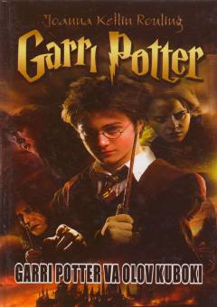

GPGarri Potter sehrgarlar bellashuvida kutilmaganda ishtirokchi bo'lib qoladi.
Garri Potter romanlar turkumining to'rtinchi qismida Xogvars maktabida o'tkaziladigan Uch sehrgar bellashuvi tasvirlanadi. Kutilmaganda Olov kuboki Garri Potterni ham ushbu xavfli musobaqaning to'rtinchi ishtirokchisi sifatida tanlab oladi. Asar ezgulik va yovuzlik o'rtasidagi kurashni qiziqarli voqealar orqali yoritib beradi.